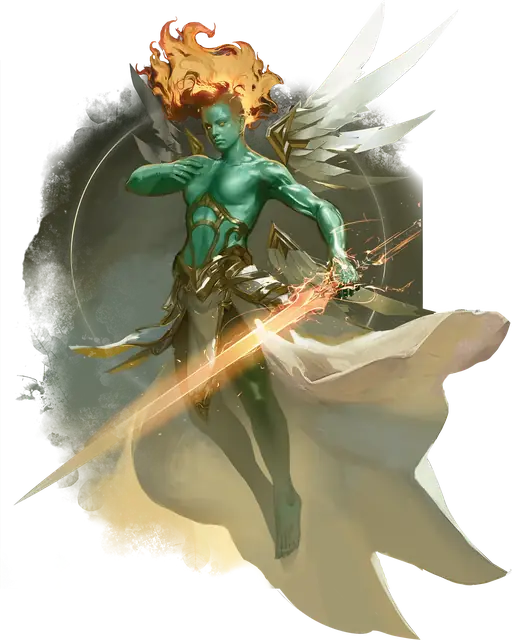

Планетар
Planetar
Большой Небожитель (Ангел), Принципиальный Добрый

Класс Защиты 19 Инициатива +10 (20)
Хиты 262 (21к10 + 147)
Скорость 40 футов, Полёта 120 футов (парит)
| мод | спас | ||
|---|---|---|---|
| СИЛ | 24 | +7 | +12 |
| ЛОВ | 20 | +5 | +5 |
| ТЕЛ | 24 | +7 | +12 |
| мод | спас | ||
|---|---|---|---|
| ИНТ | 19 | +4 | +4 |
| МДР | 22 | +6 | +11 |
| ХАР | 25 | +7 | +12 |
Сопротивление урону Излучение
Иммунитеты Испуганный, Истощение, Очарованный
Чувства пассивное Восприятие 21, Истинное зрение 120 футов
Языки Все, Телепатия 120 фт.
Опасность 16 (15 000 опыта; БВ +5)
Особенности
Божественная осведомлённость. Планетар сразу понимает, слышит ли он ложь.
Восстановление возвышенного. Когда планетар умирает за пределами Горы Целестия, его тело исчезает и в тот же миг заново возрождается со всеми Хитами где-то на горе Целестия.
Сопротивление магии. Планетар совершает с Преимуществом спасброски от заклинаний и прочих магических эффектов.
Действия
Мультиатака. Планетар совершает три атаки Сияющим мечом или дважды использует Святую вспышку.
Сияющий меч. Бросок рукопашной атаки: +12, досягаемость 10 фт. Попадание: 14 (2к6 + 7) Рубящего урона плюс 18 (4к8) урона Излучением.
Святая вспышка. Спасбросок Ловкости: Сл 20, каждый враг в 20-футовой Сфере с центром на видимой планетаром точке в 120 футах. Провал: 24 (7к6) урона Излучением. Успех: Только половина урона.
Сотворение заклинаний. Планетар сотворяет одно из следующих заклинаний, не нуждаясь в Материальных компонентах (заклинательная характеристика — Харизма, Сл спасброска заклинаний 20):
Неограниченно: Обнаружение добра и зла
1/день каждое: Власть над погодой, Общение, Оживление, Рассеивание зла и добра
Бонусные действия
Божественная подмога (2/день). Планетар сотворяет заклинания Лечение ран, Малое восстановление, Невидимость или Снятие проклятия (заклинательная характеристика — та же, что для Сотворения заклинаний).
Бонус мастерства +5
Среда обитания Верхние планы
Сокровища Реликварные
Планетар
Ангельский воин, исполненный праведного гнева
Планетары вершат возмездие праведных богов. Эти ангелы безошибочно отличают правду ото лжи и с помощью магии и благословенного оружия защищают невинных и искореняют зло по всей Мультивселенной.
Они действуют открыто лишь там, где зло вырывается за все мыслимые пределы, но, чтобы не привлекать лишнего внимания Нижних планов, они предпочитают поручать дела на Материальном плане смертным. Планетары часто избирают смертных героев для противостояния угрозам, с которыми сами встречаться не хотят, и вмешиваются только в крайнем случае.
Совершите бросок по таблице «Задания планетаров» или определите сами, с какой бедой планетар может попросить героев справиться.
Задания планетаров
| к6 | Планетар просит смертного героя... |
| 1 | Убедить злодея встретиться с ангелом. |
| 2 | Найти близкого, которого злодей считает мёртвым. |
| 3 | Исцелить любовь всей жизни жестокого правителя. |
| 4 | Вдохновить защитников осаждённого святого места. |
| 5 | Найти и уничтожить тронутый злом Артефакт. |
| 6 | Узнать истинное имя дьявола, чтобы изгнать его. |